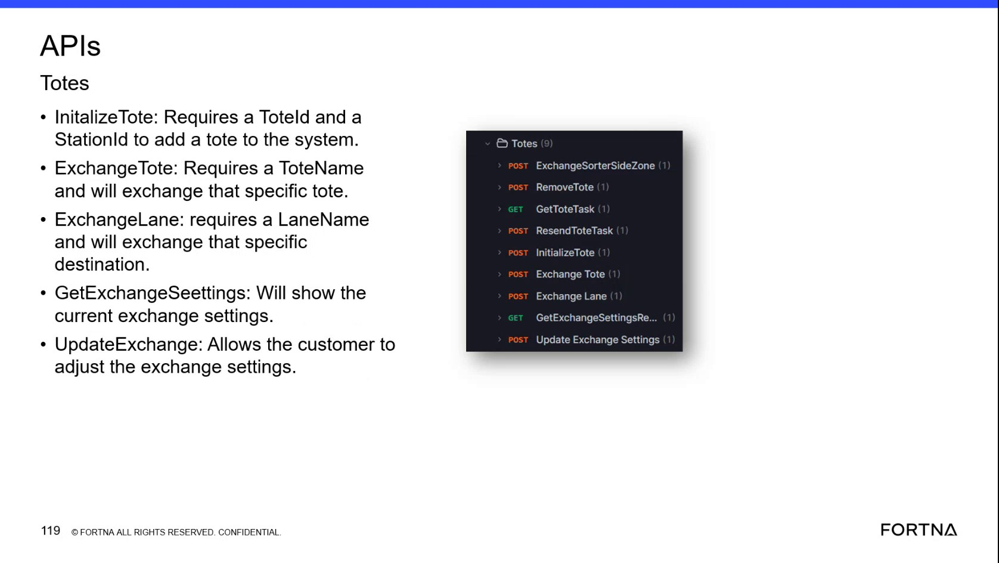
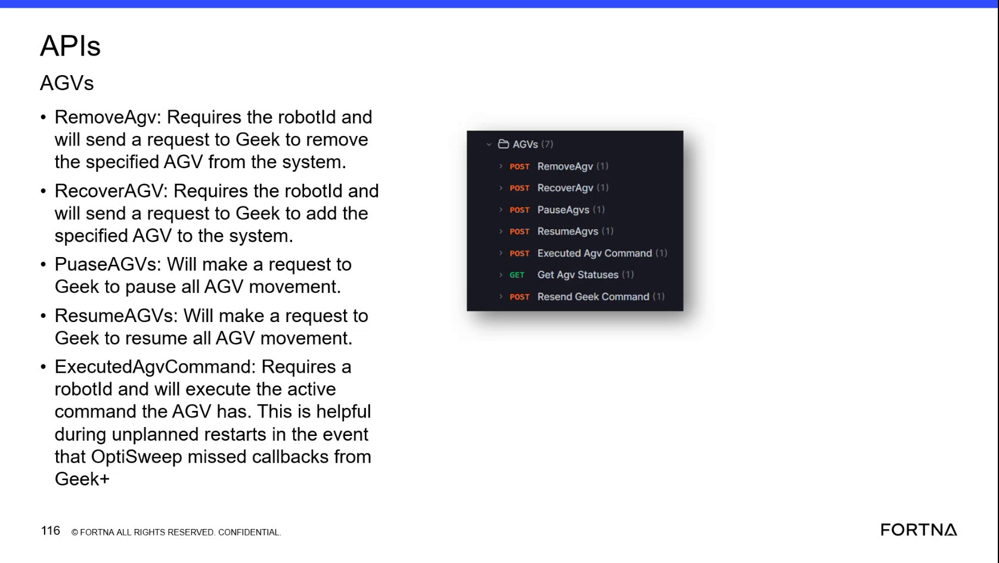

| Procedure ID | proc_remove_tote_after_agv_removal_v1 |
|---|---|
| Title | Remove a Tote via the OptiSweep / WCS API After AGV Removal |
| Procedure Type | recovery |
| Primary Role | L2_support |
| Support Safe | Yes |
| Capability Tags | tote_lifecycle_state |
| Access Surface | wcs_api, apidog |
| Audience Roles | L2_support, L3_support |
| Failure Pattern Tags | None |
| Validation Status | needs_sme_review |
| Merge Status | source_finalized |
Use the OptiSweep / WCS API through Apidog or an equivalent WCS API client to remove a tote by submitting POST RemoveTote with the required ToteId. The associated AGV must be removed before the tote-removal request is submitted.
Use the OptiSweep / WCS API when a tote must be removed from the system and the associated AGV has already been removed.


Responsible role: L2_support
Instruction:
In Apidog or an equivalent OptiSweep / WCS API client, review the AGVs API area and the available AGV status or removal information for the AGV associated with the tote. Proceed only when the associated AGV has been removed from the system.
Expected result:
The associated AGV is confirmed as removed before any POST RemoveTote request is submitted.
Stop or Escalate If:
Responsible role: L2_support
Instruction:
In the OptiSweep / WCS API client's Totes API area, open POST RemoveTote and enter the required ToteId.
Expected result:
The POST RemoveTote request contains the ToteId for the tote whose associated AGV has already been removed.
Stop or Escalate If:
Responsible role: L2_support
Instruction:
Submit POST RemoveTote in the OptiSweep / WCS API client and review the resulting API response or displayed removal outcome.
Expected result:
The API displays the outcome of the RemoveTote request and indicates whether the tote was removed from the system.
Stop or Escalate If: